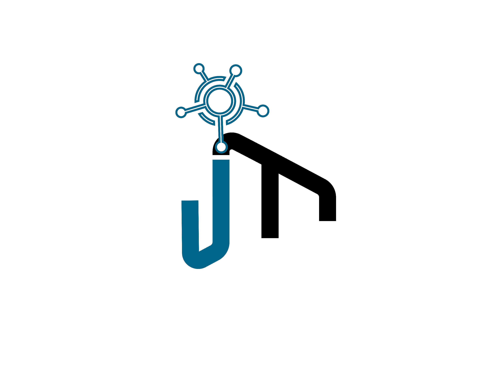
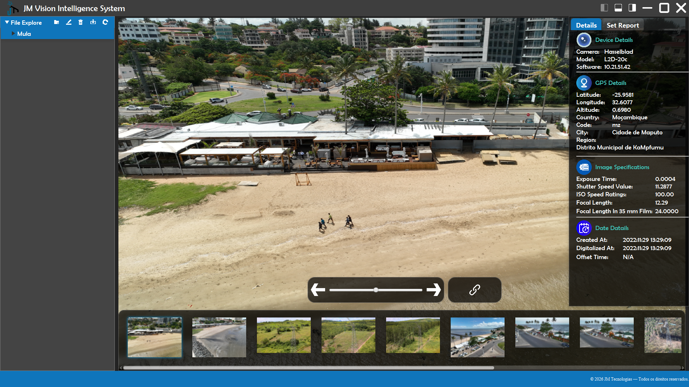

Manual do Utilizador
JM Vision Intelligence System
Sobre este manual
Este manual orienta o utilizador na instalação e operação do JM Vision Intelligence System, uma aplicação Windows para organizar, visualizar e analisar tecnicamente imagens. O sistema centraliza a navegação por pastas, a leitura de metadados EXIF, a consulta de coordenadas GPS e a produção de relatórios PDF.
Índice
1. Visão geral
O fluxo normal de utilização é: criar ou selecionar uma pasta de trabalho, importar imagens, escolher uma miniatura, analisar a imagem e os seus dados técnicos e, quando necessário, gerar um relatório.
| Função | Resultado |
|---|---|
| Organização | Criação, mudança de nome e eliminação de pastas na área própria do sistema. |
| Importação | Cópia de imagens de uma pasta externa para a pasta selecionada no sistema. |
| Visualização | Pré-visualização, miniaturas, zoom, deslocação, rotação e navegação sequencial. |
| Análise | Leitura de fabricante, modelo, software, parâmetros fotográficos, datas e GPS. |
| Geolocalização | Identificação aproximada de país/cidade/região e abertura no Google Maps. |
| Relatório | Criação de um PDF por imagem, incluindo pré-visualização, metadados e notas. |
2. Requisitos e instalação
2.1 Requisitos recomendados
- Computador com Microsoft Windows 10 ou Windows 11.
- Permissão para instalar aplicações e gravar na pasta Documentos do utilizador.
- Espaço livre suficiente para as imagens importadas e os relatórios.
- Ligação à Internet para converter coordenadas em nomes de locais e abrir o mapa.
- Navegador e leitor de PDF predefinidos no Windows.
2.2 Instalar pelo ficheiro EXE
- Localize o ficheiro JM Vision Intelligence System-1.0.0.exe.
- Faça duplo clique no instalador. Se o Windows pedir autorização, confirme apenas se o instalador veio de uma fonte confiável da JM Tecnologias.
- Siga os passos apresentados pelo assistente de instalação.
- Concluída a instalação, abra a aplicação pelo atalho criado ou pelo menu Iniciar.
2.3 Instalar pelo ficheiro MSI
Em ambientes empresariais, o administrador pode instalar o pacote JM Vision Intelligence System-1.0.0.msi. O comportamento funcional da aplicação é o mesmo.
2.4 Primeiro arranque
No primeiro arranque, o sistema cria automaticamente a estrutura de trabalho em Documentos\JM Vision Intelligence. A árvore de pastas aparece do lado esquerdo e começa na pasta File Explore.
2.5 Encerrar, minimizar e maximizar
Use os três botões no canto superior direito. O botão — minimiza, o botão quadrado maximiza/restaura e o botão × encerra imediatamente a aplicação.
3. Conhecer a interface

Figura 1 — Interface principal da aplicação em funcionamento, com imagem selecionada, metadados e galeria carregados.
| Área | Utilização |
|---|---|
| 1. Barra de título | Permite arrastar a janela, ocultar painéis e controlar a janela. |
| 2. Árvore de pastas | Apresenta apenas as pastas dentro de File Explore. A barra superior contém os comandos de gestão e importação. |
| 3. Pré-visualização | Mostra a imagem escolhida. A roda do rato controla o zoom; o arrasto desloca a imagem ampliada. |
| 4. Propriedades | O separador Details apresenta os metadados. O separador Set Report recebe notas e contém Export e Open. |
| 5. Controlos | Navegação anterior/seguinte, rotação por cursor deslizante e abertura do mapa. |
| 6. Galeria de miniaturas e barra de estado | Ocupam a zona inferior, ou footer, da tela. A galeria forma uma faixa horizontal ampla por baixo da pré-visualização e do painel de propriedades, apresentando as imagens da pasta selecionada e uma barra de deslocamento horizontal. A faixa azul no limite inferior é a barra de estado e estende-se por toda a largura da janela, mostrando mensagens de progresso, resultados e avisos. |
Botões da árvore de pastas
| Ícone | Ação | Condição |
|---|---|---|
| 📁＋ | Criar uma subpasta | Selecione primeiro a pasta onde a nova pasta será criada. |
| ✎ | Renomear a pasta selecionada | Introduza um nome válido e diferente. |
| 🗑 | Eliminar a pasta selecionada | A pasta deve estar vazia; escreva DELETE para confirmar. |
| ⇩ | Importar imagens | A pasta selecionada será o destino. |
| ↻ | Atualizar a árvore | Use após alterações externas ou se uma pasta não aparecer. |
4. Primeiros passos
Fluxo rápido recomendado
- Na árvore à esquerda, selecione File Explore.
- Crie uma pasta para o trabalho, caso ainda não exista.
- Selecione a pasta criada e clique no botão de Importar.
- Escolha a pasta externa onde estão as imagens e aguarde a conclusão.
- Clique numa miniatura para abrir a imagem e carregar os metadados.
- Consulte o separador Details; use o botão de mapa se existirem coordenadas.
- No separador Set Report, escreva notas e clique em Export.
- Clique em Open, escolha o PDF gerado e confirme o resultado.
5. Gerir pastas
Criar uma pasta
- Selecione a pasta principal na árvore.
- Clique no ícone Criar pasta.
- Em “Name for new folder”, escreva o nome e confirme com Yes.
- A árvore é atualizada automaticamente.
Renomear uma pasta
- Selecione a pasta que pretende alterar.
- Clique no ícone Renomear, introduza o novo nome e confirme.
\ / : * ? " < > |.Eliminar uma pasta
- Confirme que a pasta está vazia e selecione-a.
- Clique no ícone Eliminar.
- Escreva exatamente DELETE e confirme.
6. Importar imagens
A importação copia as imagens existentes numa pasta externa para a pasta de destino selecionada na árvore. Os ficheiros originais permanecem na origem.
- Na árvore, selecione a pasta que deverá receber as imagens.
- Clique no botão de Importar.
- Na janela “Selecionar pasta de origem”, escolha a pasta onde estão as imagens.
- Confirme a escolha e acompanhe o progresso na barra de estado.
- Quando terminar, a galeria é atualizada e o sistema informa quantas imagens foram importadas.
Comportamento dos nomes
Durante a importação, o sistema cria nomes a partir da pasta de destino e de uma numeração sequencial. Por exemplo, ao importar para a pasta Inspecao_A, os ficheiros podem ficar como Inspecao_A0.jpg, Inspecao_A1.jpg e assim sucessivamente.
Formatos de imagem
Para visualização consistente na galeria, prefira JPG, JPEG, PNG, GIF, BMP ou WEBP. O importador também reconhece TIFF/TIF e HEIC, mas o suporte de pré-visualização pode depender do runtime e estes formatos podem não aparecer na galeria desta versão.
Regras da importação
- Apenas ficheiros presentes diretamente na pasta escolhida são copiados; subpastas não são importadas.
- Ficheiros com o mesmo nome de destino podem ser substituídos.
- Não feche a aplicação enquanto a barra de estado indicar que a importação está em curso.
- Se cancelar a seleção da pasta de origem, nenhuma imagem é importada.
7. Visualizar e navegar
Selecione uma pasta na árvore para carregar as miniaturas. Clique numa miniatura para a apresentar no painel central e preencher automaticamente o separador de propriedades.
| Operação | Como fazer |
|---|---|
| Zoom | Coloque o ponteiro sobre a pré-visualização e rode a roda do rato para cima ou para baixo. |
| Deslocar (pan) | Prima o botão do rato sobre a imagem e arraste, especialmente após ampliar. |
| Rodar | Arraste o cursor deslizante entre −180° e +180°. Ao selecionar outra imagem, a posição do cursor volta a 0°. |
| Anterior/seguinte | Use as setas visuais junto ao cursor de rotação ou os atalhos de teclado. |
8. Consultar metadados
Ao selecionar uma imagem, o sistema lê os metadados incorporados no ficheiro. Abra o painel da direita e selecione Details.
| Grupo | Campos apresentados | Interpretação |
|---|---|---|
| Device Details | Camera, Model, Software | Fabricante, modelo do equipamento e programa que gravou ou editou a imagem. |
| GPS Details | Latitude, Longitude, Altitude, Country, Code, City, Region | Coordenadas incorporadas e nomes geográficos obtidos através de serviço online. |
| Image Specifications | Exposure Time, Shutter Speed Value, ISO Speed Ratings, Focal Length, Focal Length in 35 mm | Parâmetros técnicos usados durante a captura. |
| Date Details | Created At, Digitalized At, Offset Time | Data/hora original, data de digitalização e informação de fuso horário, quando existentes. |
Fiabilidade e interpretação
- Metadados podem ser alterados ou removidos por editores, redes sociais, aplicações de mensagens e processos de exportação.
- A presença de GPS não prova, por si só, que a imagem foi capturada naquele local.
- O nome do país/cidade/região depende de geocodificação inversa e pode ser aproximado.
- Para uso pericial, preserve o original, registe a origem e aplique procedimentos próprios de integridade.
9. Abrir a localização no mapa
- Selecione uma imagem que apresente valores de latitude e longitude.
- Clique no botão com o ícone de ligação/localização, junto aos controlos de navegação.
- O navegador predefinido abre o Google Maps no ponto indicado.
Se a imagem não tiver coordenadas, é apresentada a mensagem “Coordenates not set”. Se os nomes geográficos não aparecerem mas latitude e longitude existirem, confirme a ligação à Internet; as coordenadas locais ainda podem estar disponíveis.
10. Criar e abrir relatórios
10.1 Relatório de uma imagem
- Clique na miniatura da imagem a analisar.
- No painel da direita, abra o separador Set Report.
- Escreva as observações em Image Notes. O limite atual é de 300 caracteres.
- Clique em Export.
- Aguarde a mensagem “Report Genarated”. O PDF é guardado automaticamente na pasta de relatórios.
O nome do PDF é derivado do nome da imagem. Por exemplo, Inspecao_A0.jpg gera Inspecao_A0.pdf.
10.2 Relatórios de várias imagens
- Clique na primeira miniatura.
- Mantenha Ctrl premido e clique nas outras miniaturas.
- Confirme a seleção através do contorno azul/ciano em cada miniatura.
- Introduza as notas e clique em Export.
Quando existem duas ou mais imagens selecionadas, o sistema cria um PDF separado para cada imagem. As mesmas notas são aplicadas a todos os relatórios desse lote.
10.3 Abrir um relatório
- No separador Set Report, clique em Open.
- A janela abre inicialmente em Documentos\JM Vision Intelligence\Report.
- Selecione o ficheiro PDF e clique em Abrir. O leitor predefinido do Windows será usado.
10.4 Conteúdo do relatório
O relatório pode incluir identificação do ficheiro, imagem de referência, data de emissão, dados do equipamento, GPS, parâmetros fotográficos, datas, notas do utilizador e blocos de verificação.
11. Atalhos de teclado
| Atalho | Ação confirmada nesta versão |
|---|---|
| Ctrl + S | Mostrar ou ocultar a galeria inferior de miniaturas. |
| Ctrl + P | Mostrar ou ocultar o painel de propriedades/relatório. |
| Ctrl + ← | Ir para a imagem anterior da galeria. |
| Ctrl + → | Ir para a imagem seguinte da galeria. |
| Ctrl + clique | Adicionar ou remover imagens numa seleção múltipla. |
12. Pastas usadas pelo sistema
| Pasta | Finalidade |
|---|---|
| Documentos\JM Vision Intelligence\File Explore | Raiz das pastas e imagens de trabalho apresentadas na árvore. |
| Documentos\JM Vision Intelligence\Report | Destino automático dos relatórios PDF. |
| Documentos\JM Vision Intelligence\FileImageSystem | Recursos visuais internos usados pela aplicação e pelos relatórios. |
| Documentos\JM Vision Intelligence\Data | Dados auxiliares reservados pelo sistema. |
Cópia de segurança
Inclua pelo menos as pastas File Explore e Report na rotina de cópia de segurança. Feche a aplicação antes de copiar ou restaurar grandes volumes de dados.
13. Resolução de problemas
| Sintoma | Causa provável | Solução |
|---|---|---|
| As miniaturas não aparecem. | Pasta sem imagens compatíveis, carregamento em curso ou formato não suportado pela galeria. | Aguarde, atualize a árvore, confirme a pasta e teste com JPG/PNG. |
| Aparece “Destination not set”. | A importação foi iniciada sem pasta de destino. | Selecione primeiro uma pasta na árvore e repita. |
| A pasta não é eliminada. | A pasta contém imagens/subpastas ou está em uso. | Feche ficheiros abertos, remova/mova o conteúdo e tente novamente. |
| Os campos mostram N/A. | A imagem não possui esses metadados. | Verifique o original diretamente da câmara; isto não é necessariamente uma falha. |
| País/cidade/região estão vazios. | Sem GPS, sem Internet ou serviço de geocodificação indisponível. | Confirme latitude/longitude e ligação à Internet; tente mais tarde. |
| O mapa não abre. | Sem coordenadas, navegador indisponível ou associação do Windows incorreta. | Confirme GPS e defina um navegador predefinido. |
| O PDF não é gerado. | Imagem não selecionada, ficheiro já aberto/bloqueado, recursos internos ausentes ou licença expirada. | Selecione a imagem, feche o PDF anterior, verifique FileImageSystem e observe a mensagem apresentada. |
| O botão Open não abre o PDF. | Sem aplicação predefinida para PDF. | Instale/defina um leitor de PDF no Windows e tente de novo. |
| A importação substituiu ficheiros. | Já existiam nomes de destino iguais. | Use uma pasta de destino nova/vazia e preserve os originais. |
| “Limite de uso excedido ou licença expirada”. | Limite da versão de avaliação atingido. | Contacte o suporte/licenciamento da JM Tecnologias. |
Antes de pedir assistência
Registe a versão do sistema, a mensagem completa, o passo que causou o erro, o formato da imagem e se o problema se repete com outro ficheiro. Não envie imagens confidenciais sem autorização.
14. Boas práticas
- ✓ Preserve sempre os ficheiros originais fora da pasta de trabalho.
- ✓ Crie uma pasta separada por projeto ou ocorrência antes de importar.
- ✓ Use nomes de pastas claros, curtos e consistentes.
- ✓ Verifique a imagem, os metadados e as notas antes de exportar.
- ✓ Arquive relatórios antigos antes de voltar a gerar PDFs com o mesmo nome.
- ✓ Faça cópias de segurança regulares de File Explore e Report.
- ✓ Trate GPS e EXIF como informação auxiliar que pode ter sido alterada.
- ✓ Em processos formais, documente origem, responsável, data e procedimentos de integridade.
15. Glossário
| Termo | Significado |
|---|---|
| EXIF | Metadados técnicos incorporados por câmaras e outros dispositivos em ficheiros de imagem. |
| GPS | Latitude, longitude e, por vezes, altitude associadas à captura. |
| Geocodificação inversa | Conversão de coordenadas em nomes aproximados de país, cidade ou região. |
| ISO | Valor relacionado com a sensibilidade usada na captura. |
| Distância focal | Parâmetro da objetiva, normalmente expresso em milímetros. |
| Tempo de exposição | Tempo durante o qual o sensor ficou exposto à luz. |
| Miniatura | Representação reduzida da imagem na galeria inferior. |
| Pan | Deslocação da imagem dentro da área de pré-visualização. |
| N/A | Dado não disponível ou não aplicável. |
Apoio
JM Tecnologias
Software Engineering, Automation, GIS Systems e Image Analysis
E-mail indicado pelo sistema: comercial@jm-tecnologias.co.mz